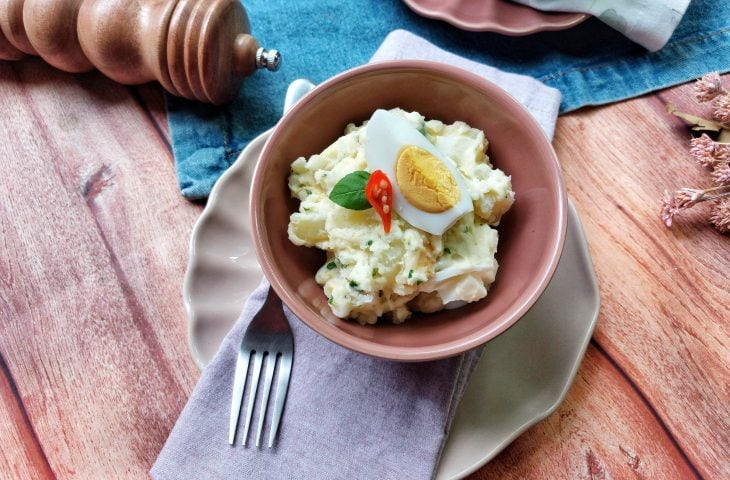
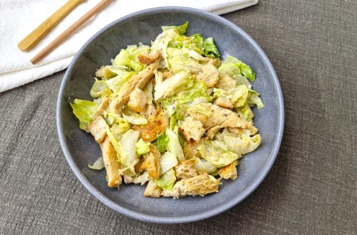

O arroz com calabresa na pressão fácil é superprático, experimente servir com uma salada verde ou com batata frita, fica uma delícia. Adicione azeitonas ou picles para um sabor mais intenso.

Salada de Batata
A salada de batata é um dos acompanhamentos mais populares em vários países. É uma salada composta por batatas cozidas, acompanhadas por diversos ingredientes. Possui denominações diferentes, dependendo da zona onde se consuma ou confeccione. Por exemplo, na região do Ruhr, denomina-se Erpelschlut.

Salada Caesar
Caesar salad, salada Caesar ou salada César é uma salada preparada com alface-romana e molho Caesar. Os temperos usados mais habitualmente para compor este molho são azeite de oliva, suco de limão, anchovas, queijo parmesão, molho inglês, sal, açúcar e pimenta-preta.